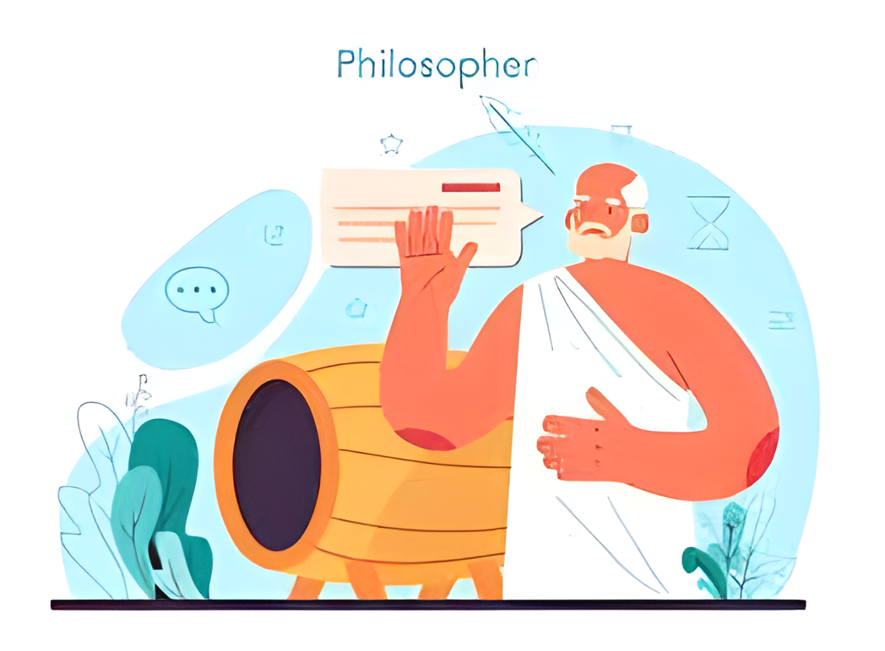

OBJETIVO
El objetivo de nuestra empresa es posicionarnos como líderes en el mercado de desarrollo de software al ofrecer soluciones innovadoras y de alta calidad que impulsen el crecimiento y la transformación digital de nuestros clientes. Nos dedicamos a desarrollar productos que no solo respondan a sus necesidades actuales, sino que también anticipen y superen sus expectativas futuras. Para lograr esto, mantenemos un enfoque constante en la mejora continua y en la satisfacción del cliente, asegurando que cada proyecto se ejecute con la máxima calidad y eficacia. Buscamos crear un impacto duradero, ayudando a nuestros clientes a mantenerse a la vanguardia en un entorno tecnológico en constante cambio y evolución.

MISIÓN
Nuestra misión es transformar ideas en soluciones tecnológicas innovadoras y efectivas, ofreciendo un desarrollo de software personalizado que optimiza la eficiencia y competitividad de nuestros clientes. Nos dedicamos a crear aplicaciones a medida con un enfoque ágil y colaborativo, donde la comunicación abierta y la retroalimentación constante son clave para alcanzar resultados excepcionales. A través de nuestra experiencia y el uso de herramientas avanzadas, buscamos proporcionar productos que no solo satisfagan las necesidades específicas de cada proyecto, sino que también impulsen la transformación digital de las empresas. Nuestro compromiso es con empresas de todos los tamaños y sectores, ayudándolas a mejorar sus procesos y a obtener una ventaja competitiva en un entorno empresarial en constante cambio.
VISIÓN
En ADAROS, aspiramos a ofrecer soluciones innovadoras y de alta calidad que superen los desafíos tecnológicos de nuestros clientes y optimicen sus procesos empresariales. Nuestra visión es ser reconocidos como líderes en la industria del desarrollo de software, destacándonos por nuestra excelencia técnica, creatividad y dedicación a la satisfacción del cliente. Buscamos establecer una presencia global significativa, expandiendo nuestro impacto en diversos sectores y mercados, y convertirnos en un socio confiable y colaborativo que ofrece resultados excepcionales de manera consistente. Valoramos la excelencia, la integridad, la innovación, el trabajo en equipo y la orientación al cliente como los pilares fundamentales de nuestra empresa, y nos comprometemos a evolucionar constantemente, adoptando nuevas tecnologías, metodologías y prácticas empresariales para mantenernos relevantes y competitivos en un entorno en constante cambio.

FILOSOFIA
La filosofía de ADAROS se fundamenta en la convicción de que el éxito se logra a través de la colaboración, la disciplina, la comunicación abierta y un firme compromiso con la excelencia. Creemos en la importancia de establecer metas realistas y alcanzables, y fomentamos un ambiente donde cada opinión es valorada y considerada para enriquecer nuestros proyectos. Valoramos la participación activa de todos los miembros de la empresa, sin importar su nivel jerárquico, y estamos convencidos de que el trabajo conjunto es clave para alcanzar resultados sobresalientes. Priorizamos la creación de un entorno de trabajo saludable, tranquilo y honesto, en el que cada empleado se sienta apreciado y motivado para aportar sus ideas y soluciones, contribuyendo así al éxito colectivo de nuestra empresa.

VALORES
Confianza: En ADAROS buscamos construir relaciones sólidas y duraderas basadas en la confianza mutua entre la empresa y los clientes, garantizando la seguridad y la fiabilidad en cada interacción, haciendo que los clientes se sientan seguros con cada proceso que realicen con nosotros.
Integridad: Uno de los valores más importantes para ADAROS es la integridad, el actuar con ética en todas las operaciones comerciales, cumpliendo con los compromisos, valores y normas en el trato con los clientes, creando un ambiente cómodo para ellos como para nosotros.
Respeto: Queremos respetar la dignidad, la diversidad y las necesidades individuales de todas las personas involucradas, creando un entorno de trabajo inclusivo y respetuoso.
Innovación Algo muy importante para nosotros es fomentar la creatividad y la búsqueda constante de soluciones novedosas para cada proyecto que creamos. Estar abiertos a la implementación de nuevas tecnologías y métodos que mejoren la eficiencia y la efectividad de los procesos, manteniendo así una posición líder en el mercado.
Calidad: Algo fundamental es el compromiso con la excelencia en la prestación de servicios, asegurándonos de que cada trabajo realizado cumpla con los más altos estándares de calidad y satisfacción del cliente.
POLÍTICAS
Definición de Metas Viables: ADAROS se compromete a establecer metas claras y alcanzables que se ajusten a los recursos disponibles, además de velar por el cumplimiento de las mismas, dentro de los tiempos establecidos para que el proyecto no tenga ningún inconveniente. Trabajamos sobre la eficiencia y eficacia en el cumplimiento de las metas planteadas por nuestros clientes y de la mano con su organización.
Seguridad: La seguridad y la privacidad de nuestros clientes es muy importante, nos comprometemos a proteger los datos personales de los clientes y a cumplir con todas las normativas de seguridad para garantizar la confidencialidad y seguridad de la información.
Calidad del Producto: Nos comprometemos a ofrecer soluciones de software de alta calidad que cumplan con los más altos estándares, atendiendo a las necesidades y expectativas de los clientes y asegurándonos de que todo lo que hagamos tenga la máxima garantía de calidad.